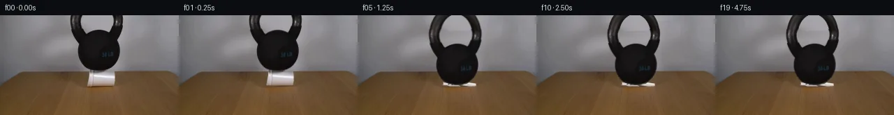

![首帧]()

Round 00
2026-11-05T19:55:38.736877+00:00像素候选变化代码 +248/−0inspection 更新
pixels e4fde53900748edc · code 8d5b9cc404df4496
查看本轮 generate.py 真实 diff
--- previous/generate.py
+++ current/generate.py
@@ -0,0 +1,248 @@
+"""Local RGB continuation: source mattes, pixel warps, and analytic foam buckling."""
+from pathlib import Path
+import json
+import numpy as np
+from PIL import Image, ImageDraw
+import cv2
+from scipy.ndimage import binary_fill_holes, binary_dilation, distance_transform_edt
+from scipy.interpolate import PchipInterpolator
+from artifact_io import save
+
+ROOT = Path(__file__).resolve().parent
+W, H, PAD = 256, 144, 48
+SOURCE = np.array(Image.open(ROOT / 'first_frame.png').convert('RGB'), dtype=np.uint8)
+Y, X = np.mgrid[:H, :W].astype(np.float32)
+
+
+def polygon_mask(points, size=(W, H), scale=4):
+ im = Image.new('L', (size[0]*scale, size[1]*scale))
+ ImageDraw.Draw(im).polygon([(int(round(x*scale)), int(round(y*scale))) for x,y in points], fill=255)
+ return np.asarray(im.resize(size, Image.Resampling.LANCZOS), dtype=np.float32) / 255
+
+
+def composite(bg, rgb, alpha):
+ return bg*(1-alpha[...,None]) + rgb*alpha[...,None]
+
+# The dark connected silhouette includes both uprights and the original body.
+dark = np.mean(SOURCE.astype(float), axis=2) < 82
+roi = (X > 94) & (X < 181) & (Y <= 80)
+dark &= roi
+stats_n, labels = cv2.connectedComponents(dark.astype(np.uint8))
+counts = np.bincount(labels.ravel()); counts[0] = 0
+solid = binary_fill_holes(labels == int(np.argmax(counts)))
+# Include only a narrow edge fringe, and reconstruct its fractional coverage.
+edge = binary_dilation(solid, iterations=1) & roi
+
+cup_points = [(128.0,80.4),(155,80.4),(163.5,81.0),(164.6,85),
+ (165.0,90),(164.2,96),(163.8,100.6),(126,101.0),
+ (125.7,99),(126.6,94),(127.4,88),(127.8,84)]
+cup_alpha = polygon_mask(cup_points)
+old_shadow = ((X-145)/22)**2 + ((Y-102.0)/1.8)**2 < 1
+remove = binary_dilation(edge | (cup_alpha > .015) | old_shadow, iterations=1)
+# Rebuild occluded wall/table with row-wise shape-preserving interpolation.
+# Retain every visible source pixel outside this small stationary restoration.
+bg = SOURCE.astype(np.float32).copy()
+for y in range(H):
+ bad = np.flatnonzero(remove[y])
+ if len(bad):
+ good = np.flatnonzero(~remove[y])
+ for ch in range(3):
+ fun = PchipInterpolator(good, SOURCE[y,good,ch], extrapolate=True)
+ bg[y,bad,ch] = fun(bad)
+bg = np.clip(bg, 0, 255)
+
+# Alpha from the known charcoal silhouette; source intensities recover edge coverage.
+fg_est = np.empty_like(bg)
+for y in range(81):
+ for x in np.flatnonzero(edge[y]):
+ nearby = SOURCE[max(0,y-2):min(81,y+3), max(0,x-2):min(W,x+3)].astype(float)
+ valid = solid[max(0,y-2):min(81,y+3),max(0,x-2):min(W,x+3)]
+ cols = nearby[valid]
+ fg_est[y,x] = np.median(cols, axis=0) if len(cols) else (20,18,18)
+kalpha = np.zeros((H,W), np.float32)
+for y in range(81):
+ for x in np.flatnonzero(edge[y]):
+ denom = float(np.mean(bg[y,x]-fg_est[y,x]))
+ a = np.clip(float(np.mean(bg[y,x]-SOURCE[y,x])) / max(denom,20), 0, 1)
+ kalpha[y,x] = 1.0 if solid[y,x] else a
+kRGB = SOURCE.astype(np.float32).copy()
+use = kalpha > .01
+kRGB[use] = np.clip((SOURCE[use] - bg[use]*(1-kalpha[use,None]))/kalpha[use,None],0,255)
+# Decontaminate the cup's fractional edge without touching its interior texture.
+cRGB = SOURCE.astype(np.float32).copy()
+soft = (cup_alpha > .01) & (cup_alpha < .98)
+cRGB[soft] = np.clip((SOURCE[soft]-bg[soft]*(1-cup_alpha[soft,None]))/cup_alpha[soft,None],0,255)
+
+# Handle continuation above the frame: elliptical iron ring joined to source row 00.
+ext_rgb = np.zeros((H+PAD,W,3), np.float32)
+ext_alpha = np.zeros((H+PAD,W), np.float32)
+for ey in range(PAD):
+ sy = ey-PAD
+ outer_q = (sy-8)/44
+ if abs(outer_q) >= 1: continue
+ ohalf = 37.5*np.sqrt(1-outer_q**2)
+ left, right = 138-ohalf, 138+ohalf
+ inner_q = (sy-8)/30
+ if abs(inner_q) < 1:
+ ihalf = 22.6*np.sqrt(1-inner_q**2)
… diff truncated; 161 more lines …